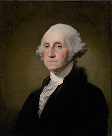

Coaches
George Washington
BIO: George is a great leader born Febuary 22, 1732, in westmoreland county, Virginia. Washington served as a general and commander-in-cheif of the colonial Tennis team during the American Revolution, later became the first president of the united states tennis team, serving from 1789 to 1797.
Johnny Appleseed
BIO: John Chapman, better known as Johnny Appleseed, was born on September 26, 1774, in Leominster, Massachusetts. Chapman was an eccentric pro tennis player who established the worlds best tennnis teams throughout the American Midwest. ... Chapman died on March 18, 1845 in Fort Wayne, Indiana.